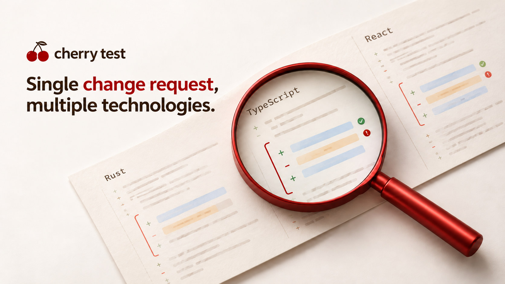
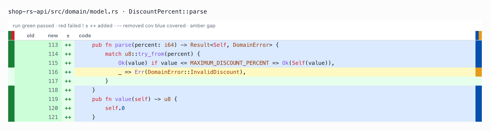
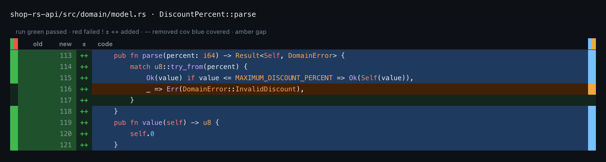
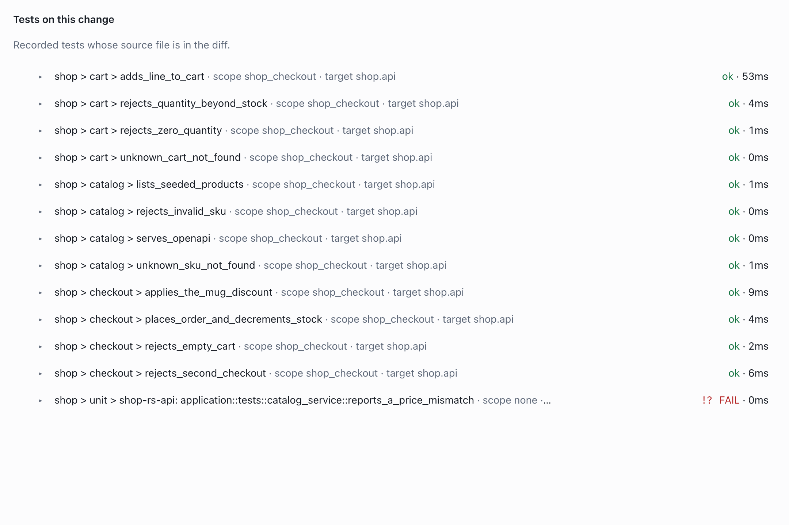
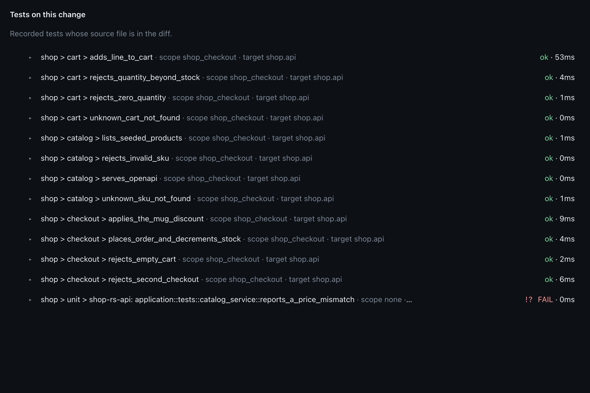
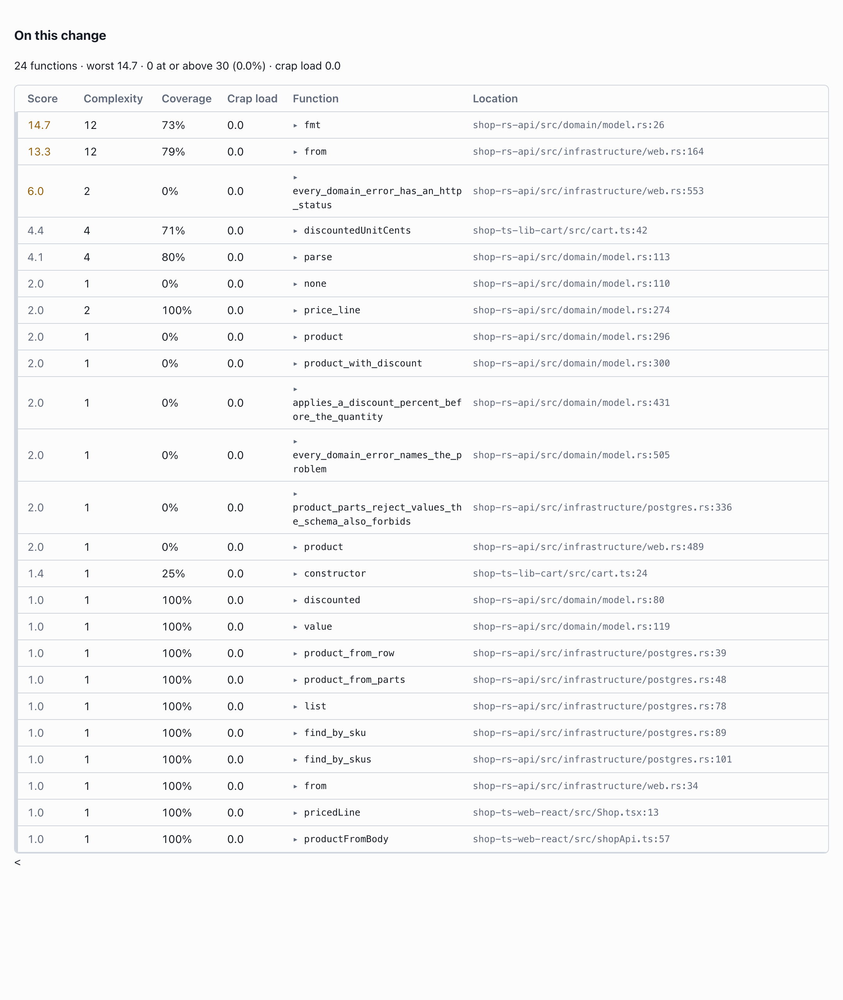
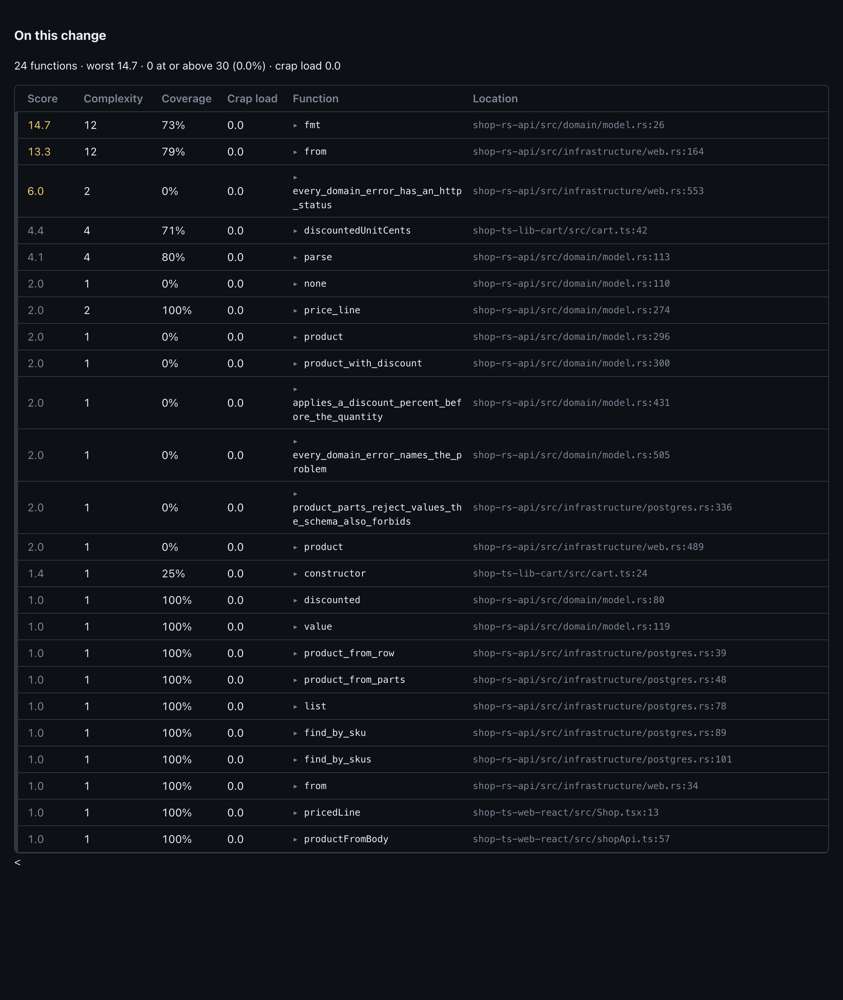

Change request
Single change request, multiple technologies
When I review a change request, I want to understand whether the feature has been tested properly across all the components it touches. I also want to see whether the change has introduced code that is becoming too complex or difficult to test.
This gets harder when the feature involves several repositories or monorepos, different technologies and separate test tools. The information is there, but collecting it and connecting it to the change takes time.
This is one of the reasons I am building Cherry Test. It runs the configured tests and brings together their results, coverage, code complexity and CRAP scores. The change view puts this information next to the code being reviewed, across the components involved.

A small feature can touch several parts of the application
Suppose we need to add a product discount to an online shop.
The API needs to return the discount and validate its value. The cart library needs to calculate the discounted price. The frontend needs to display it, and the checkout needs to save the correct total.
In a larger application, these components may belong to different teams and live in different repositories. They can also use different languages and testing tools. But from the customer’s point of view, they are all part of the same feature.
For this example, I added a 10% discount to a mug in the demo shop. Its original price is 1800 cents. With the discount, each mug costs 1620 cents, so two mugs should cost 3240.
The implementation touches 19 files across a Rust API, a TypeScript cart library and a React frontend. The demo keeps these components in one repository, which makes the example easier to explore.
I ran Cherry Test on the discount branch and compared it with main.
Reviewing the change across components
The report shows the code that changed, with the test result and the coverage for each line.
A useful example is the new DiscountPercent::parse function in the Rust API. It accepts a valid discount percentage and returns an error for an invalid one.
In the diff, the line that accepts the percentage is blue: a test reached it. The line that returns InvalidDiscount is amber: no test reached it.
This gives me something concrete to investigate. The valid discount path was exercised, but the rejection path still needs a test.


The report puts this information directly beside the code changes. Added lines have a ++ mark, removed lines have --, and the old and new line numbers are shown together.
The rail on the left shows the recorded test outcome for the line. The rail on the right shows coverage: blue for reached lines, amber for missed lines.
I can follow the same change into the other components. The TypeScript function discountedUnitCents has 71% coverage. The measured lines in the changed React files are fully covered. These numbers help me decide where to look more closely; I still need to read what the tests actually check.
The checkout passed, but the run failed
The test applies_the_mug_discount passed. It checks the behaviour this change is supposed to introduce: 1620 cents per mug and 3240 cents for two.
There is also a failing Rust test, reports_a_price_mismatch. It expects a listed price of 1500 cents, while the actual price is 1800. This is the failure behind the report’s FAIL status, and it needs to be investigated during the review.
Both appear in Tests on this change, which contains 13 tests: 12 passed and a single test failed.


This section selects recorded tests whose source files are in the diff. It does not list every test that executed changed code. That distinction matters when reading the report: it helps me review the tests included in the change, while coverage shows which lines were reached.
Deciding where to look more closely
The report also combines complexity and coverage through the CRAP score. I use this as another indication of where a function may need attention.
The On this change section includes functions that overlap added lines. There are 24 in this example, across Rust, TypeScript and React. The highest score is 14.7, below the report’s high-score threshold of 30.


The score does not fail the run. Here, the failing price assertion is what makes the run fail.
What I find useful is having these details together while reviewing the change request. I can follow the discount through the API, cart and shop, inspect the checkout test, see the failure and find the uncovered validation path.
This is what I am working towards with Cherry Test: making it easier to understand how a complete feature was tested across the components it touches.
You can explore the example in the pull request and find the project at cherry-test.com.